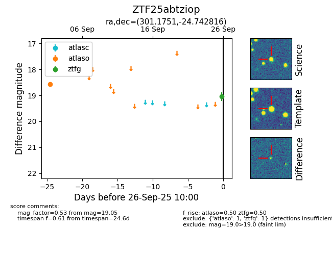

FINK: ZTF25abtziop
Lasair: ZTF25abtziop
ALeRCE: ZTF25abtziop
ZTF25abtziop (ztf,fink)
equatorial (ra, dec) = (301.1751,-24.74282)
galactic (l, b) = (17.2312,-26.41404)

last atlaso=18.57, ztfg=19.05
1 atlaso, 1 ztfg detections